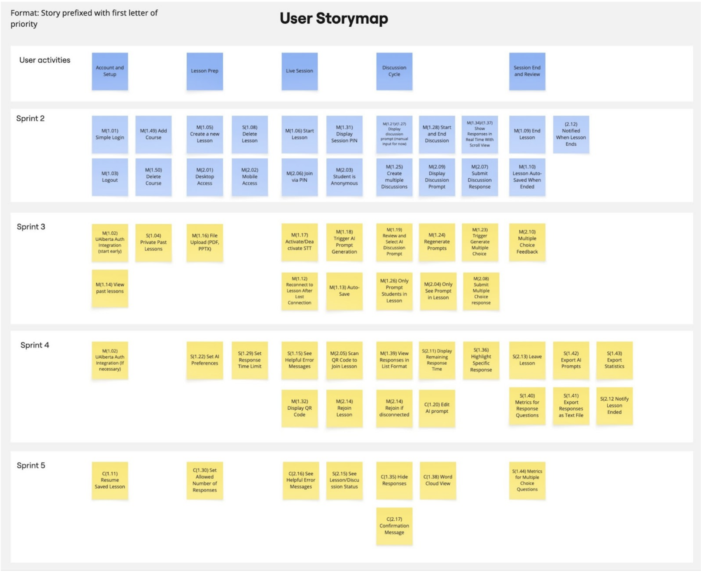

Project Management
This document outlines the project plan and task allocation for all five sprints.
The plan is based on the agreed story map, course milestones, and CMPUT 401 sprint expectations.
Story Map

The story map represents the full scope of the project across all five sprints, categorized using the MoSCoW prioritization method and aligned with the project milestones.
Project Plan
Sprint 1
Due: February 1, 2026
Sprint 1 focuses on planning, requirements, system design, and project setup.
Most tasks in this sprint are documentation and infrastructure related.
Tasks
| Section | Task | Assigned To |
|---|---|---|
| Project Requirements | Executive summary | Team |
| Project Requirements | Project glossary | Team |
| Project Requirements | User stories drafting | Kris, Sid, Nikita |
| Project Requirements | Acceptance criteria | Kris |
| Project Requirements | Product research & similar tools | Team |
| Project Requirements | Technical resources | Team |
| Software Design | Architecture diagram | Kris |
| Software Design | UML class diagram | Aldo, Shahbaz |
| Software Design | Sequence diagrams | Nikita, Muaadh |
| Software Design | Low-fidelity UI wireframes | Tommy, Siddhant |
| Project Management | Story map creation | Aldo |
| Project Management | Sprint planning | Team |
| Teamwork | Team canvas | Team |
| Teamwork | Belbin roles | Team |
| Documentation | MkDocs setup & configuration | Siddhant |
| Documentation | GitHub Pages deployment | Siddhant |
| Meetings | Meeting minutes | Tommy |
Sprint 1 Notes
- UI wireframes completed on January 28
- User stories fully completed on January 28
- UML and sequence diagrams finalized by January 30–31
Sprint 2
Due: February 15, 2026
Sprint 2 delivers the walking skeleton of the system with core lesson and discussion functionality.
Tasks
| Task | Related US | Assignee | Due Date |
|---|---|---|---|
| Backend project setup | SETUP | Siddhant | Feb 3 |
| Database schema setup | SETUP | Nikita, Muuadh | Feb 4 |
| Lesson creation API | 1.05 | Nikita, Muuadh | Feb 6 |
| PIN generation | 1.06, 1.31 | Nikita, Muuadh | Feb 8 |
| Student join flow | 2.06 | Tomiwa, Nikita, Muuadh, Kristian | Feb 9 |
| Anonymous access handling | 2.03 | Kristian, Nikita, Muuadh | Feb 9 |
| Real-time responses | 1.34 | Kristian | Feb 10 |
| Discussion lifecycle | 1.25, 1.28 | Kristian | Feb 11 |
| Discussion UI | 1.27 | Kristian, Aldo, Muuadh, Siddhant | Feb 12 |
| Lesson start/end logic | 1.06, 1.09 | Tomiwa, Nikita, Muuadh | Feb 13 |
| Code clean up | All | Siddhant, Kristian | Feb 13 |
| End-to-end testing | All | Team | Feb 14 |
| Quality Assurance | All | Kristian, Siddhant | Feb 15 |
| Sprint Velocity Estimate | All | Kristian | Feb 15 |
| Meeting documenation | All | Tomiwa | Feb 15 |
Major Milestones:
- Authentication and Role Selection: Basic account creation and distinct interfaces for teachers and students.
- Lesson Lifecycle: Ability for teachers to create, start and end lessons as well as ability for students to join and participate.
- Real-Time Infrastructure: Establish Socket connection for sending and receiving discussion prompts/responses in real time.
- Course and Discussion Management: Basic CRUD for courses and discussion topics
Completed User Stories (23 total)
| User Story | Description | Story Points | Assignee |
|---|---|---|---|
| 1.01 | Create instructor account | 3 | Nikita/Muaadh |
| 1.03 | Logout securely | 2 | Nikita/Muaadh |
| 1.05 | Create new lesson | 3 | Nikita/Muaadh |
| 1.06 | Start lesson (PIN/QR) | 3 | Tomiwa/Aldo |
| 1.08 | Delete past lesson | 2 | Nikita/Muaadh |
| 1.09 | End lesson | 3 | Shabaz |
| 1.10 | Auto-save lesson | 5 | Shabaz |
| 1.11 | Resume unfinished lesson | 3 | Shabaz |
| 1.21 | Manual prompt entry | 3 | Shabaz |
| 1.25 | Multiple discussions per lesson | 3 | Kristian |
| 1.27 | Display discussion prompt | 1 | Aldo/Kristian |
| 1.28 | Start/close discussions | 3 | Kristian |
| 1.31 | Display PIN code | 1 | Tomiwa |
| 1.34 | Real-time responses | 3 | Aldo |
| 1.37 | Scroll through responses | 2 | Aldo |
| 1.49 | Add course | 2 | Nikita/Muaadh |
| 1.50 | Delete course | 2 | Nikita/Muaadh |
| 2.01 | Access on desktop | 1 | Aldo |
| 2.02 | Access on mobile | 1 | QA |
| 2.03 | Anonymous student access | 1 | QA |
| 2.06 | Join lesson via PIN | 3 | Tomiwa |
| 2.07 | Submit text responses | 2 | Aldo |
| 2.09 | See discussion prompt | 1 | Aldo/Kristian |
Partially Implemented - Carried to Sprint 3 (11 total)
| User Story | Description | Story Points | Status |
|---|---|---|---|
| 1.02 | Login via UAlberta SSO | 3 | Partial (moved to Sprint 3) |
| 1.04 | Private lesson viewing | 3 | Partial (moved to Sprint 3) |
| 1.16 | Upload files | 5 | Partial (moved to Sprint 3) |
| 1.26 | Only students in lesson see prompts | 2 | Partial (Tommy - already implemented) |
| 1.39 | List format view | 3 | Partial (moved to Sprint 4) |
| 1.41 | Export responses | 2 | Partial (moved to Sprint 4) |
| 1.42 | Export prompts & responses | 2 | Partial (moved to Sprint 4) |
| 2.04 | See only current lesson prompts | 1 | Partial (Tommy - already implemented) |
| 2.12 | Lesson ended notification | 1 | Partial (moved to Sprint 4) |
| 2.15 | See lesson/discussion status | 1 | Partial (moved to Sprint 3) |
| 2.17 | Confirmation message | 1 | Partial (moved to Sprint 5) |
Sprint 2 Velocity: ~50 story points completed
Sprint 3
Due: March 8, 2026
Sprint 3 delivers AI integration of the system with authentication upgrades, STT pipeline, and AI-powered prompt workflows.
Major Milestones:
- Complete Auth: Upgrade from basic auth to UAlberta SSO.
- Audio-to-Data Pipeline: Capture audio, transcribe it, and feed output to AI along with uploaded context.
- AI Content Generation: System can generate, regenerate, and display prompts based on AI output.
- More Question Types: Add support for multiple choice and varied answer formats with feedback.
User Stories
| User Story | Description | Story Points | Priority | Assignee |
|---|---|---|---|---|
| 1.02 | Login via UAlberta SSO | 3 | Must | Nikita |
| 1.04 | Private lesson viewing | 3 | Should | Muaadh |
| 1.12 | Reconnect after connection loss | 5 | Must | Muaadh, Sid |
| 1.13 | Auto-save at intervals | 5 | Must | Shabaz |
| 1.14 | View past lesson details | 3 | Must | Shabaz |
| 1.16 | Upload files | 5 | Must | Sid, Kris |
| 1.17 | STT transcript capture | 5 | Must | Sid |
| 1.18 | Trigger AI prompt generation | 5 | Must | Sid, Kris |
| 1.19 | Review/select AI prompts | 3 | Must | Sid |
| 1.23 | Multiple choice/short/long answer formats | 3 | Must | Sid, Kris |
| 1.24 | Regenerate AI prompts | 3 | Must | Sid |
| 1.26 | Only students in lesson see prompts | 2 | Should | Tommy (already implemented) |
| 2.04 | See only current lesson prompts | 1 | Must | Tommy (already implemented) |
| 2.08 | Select multiple choice options | 2 | Must | Tommy, Sid |
| 2.10 | See MC question feedback | 1 | Must | Sid |
Estimated Sprint Velocity: ~48–52 points
Tasks
| Task | Related US | Assignee | Due Date |
|---|---|---|---|
| AI backend research and design | 1.16, 1.17, 1.18, 1.19, 1.23, 1.24 | Sid, Kris | Feb 22 |
| Past lesson details retrieval/UI | 1.14 | Shabaz | Feb 25 |
| File upload pipeline | 1.16 | Kris/Sid | Feb 25 |
| Lesson-isolation checks for student view | 2.04, 1.26 | Tommy | Feb 25 |
| Private lesson access control | 1.04, 1.26 | Muaadh | Feb 28 |
| Reconnection flow and session recovery | 1.12 | Muaadh, Sid | Feb 28 |
| Periodic auto-save implementation | 1.13 | Shabaz | Feb 28 |
| Authentication and access control | 1.02 | Nikita | Feb 28 |
| Reliability and session continuity | 1.12, 1.13 | Shabz/Muaadh | Feb 28 |
| Lesson persistence & history | 1.14 | Shabz | Feb 28 |
| STT capture pipeline | 1.17 | Sid | Mar 1 |
| AI prompt generation service | 1.18, 1.24 | Sid/Kris | Mar 1 |
| MCQ + short/long answer support | 1.23, 2.08, 2.10 | Tommy, Sid | Mar 3 |
| UAlberta SSO integration | 1.02 | Nikita | Mar 3 |
| Live transcription pipeline | 1.17, 1.18, 1.19, 1.24 | Sid | Mar 3 |
| Prompt review/selection UI | 1.19 | Sid | Mar 3 |
| AI backend creation (HUGE) | 1.16, 1.17, 1.18, 1.19, 1.23, 1.24 | Kris/Sid | Mar 1 |
| Question formats & student interaction | 1.23, 1.26, 2.04, 2.08 | Sid | Mar 1 |
| Feedback & results | 2.10 | Sid | Mar 5 |
| End-to-end testing for AI lesson workflow | All | Team | Mar 8 |
| UI and documentation | All | Aldo/Nikita | Mar 8 |
Completed User Stories (16 total)
| User Story | Description | Story Points | Assignee |
|---|---|---|---|
| 1.02 | Login via UAlberta SSO | 3 | Nikita |
| 1.04 | Private lesson viewing | 3 | Muaadh |
| 1.12 | Reconnect after connection loss | 5 | Muaadh, Sid |
| 1.13 | Auto-save at intervals | 5 | Shabaz |
| 1.14 | View past lesson details | 3 | Shabaz |
| 1.16 | Upload files | 5 | Kris, Sid |
| 1.17 | STT transcript capture | 5 | Sid |
| 1.18 | Trigger AI prompt generation | 5 | Sid, Kris |
| 1.19 | Review/select AI prompts | 3 | Sid, Kris |
| 1.23 | Multiple choice/short/long answer formats | 3 | Sid |
| 1.24 | Regenerate AI prompts | 3 | Sid, Kris |
| 1.26 | Only students in lesson see prompts | 2 | Tommy |
| 2.04 | See only current lesson prompts | 1 | Tommy |
| 2.08 | Select multiple choice options | 2 | Tommy, Sid |
| 2.10 | See MC question feedback | 1 | Tommy, Sid |
| 2.15 | See lesson/discussion status | 1 | Tommy |
Sprint 3 Velocity: ~50 story points completed
Sprint 4
Due: March 22, 2026
Sprint 4 delivers data export, session history, and engagement metrics with stronger classroom flow controls.
Major Milestones:
- Data Export: Functionality to export responses, statistics, and prompts to CSV.
- Classroom Flow Control: Implementation of Timers, Time Limits, and QR Code scanning for easy access.
- Session Stability: Rejoin logic to handle connection drops and helpful error messages.
- Performance Metrics: View of student engagement and participation stats.
User Stories
| User Story | Description | Story Points |
|---|---|---|
| 1.11 | Resume unfinished lesson (Already Implemented) | 3 |
| 1.20 | Edit AI prompts | 3 |
| 1.22 | AI generation preferences | 5 |
| 1.29 | Time limits for responses | 3 |
| 1.32 | Display QR code | 3 |
| 1.33 | Display lesson materials | 3 |
| 1.35 | Hide inappropriate responses | 1 |
| 1.36 | Highlight response | 1 |
| 1.39 | List format view | 3 |
| 1.40 | Student response metrics | 5 |
| 1.41 | Export responses | 2 |
| 1.42 | Export prompts & responses | 2 |
| 1.43 | Export statistics | 2 |
| 1.44 | Metrics for MC questions | 2 |
| 2.05 | Scan QR code | 3 |
| 2.11 | Timer for prompts | 1 |
| 2.12 | Lesson ended notification | 1 |
| 2.13 | Leave lesson (Already Implemented) | 3 |
| 2.14 | Rejoin lesson (Already Implemented) | 3 |
| 2.17 | Confirmation message | 1 |
Estimated Sprint Velocity: ~48 points completed
Tasks
| Task | Related US | Assignee | Due Date |
|---|---|---|---|
| AI prompt editing UI + save flow | 1.20 | Kris/ Sid | Mar 17 |
| AI preference settings + persistence | 1.22 | Sid | Mar 17 |
| AI Optimization | Enhancement | Kris/ Nikita | Mar 17 |
| Prompt & Output tuning | Enhancement | Kris | Mar 17 |
| Display lesson materials | 1.33 | Nikita | Mar 14 |
| Response timer + time-limit enforcement | 1.29, 2.11 | Muaadh | Mar 15 |
| QR display and scan flow improvements | 1.32, 2.05 | Tommy | Mar 11 |
| Response highlight interactions | 1.36 | Aldo | Mar 14 |
| Hide Inappropriate Responses | 1.35 | Aldo | Mar 14 |
| List-view response panel | 1.39 | Nikita | Mar 13 |
| Engagement metrics calculations | 1.40 | Nikita/ Sid | Mar 11 |
| MC question metrics | 1.44 | Nikita/ Sid | Mar 13 |
| Export responses (CSV) | 1.41 | Shahbaz/ Sid | Mar 12 |
| Export prompts + responses | 1.42 | Shahbaz/ Sid | Mar 11 |
| Export lesson statistics | 1.43 | Shahbaz/ Sid | Mar 10 |
| Leave/rejoin/ended-session stability | 2.12, 2.13, 2.14 | Mo & Nikita (Already impllemented) | Mar 18 |
| End-to-end testing for export/metrics | All | Shabaz/ Sid | Mar 20 |
| CI/CD Improvements & Testing | Enhancement | Sid | Mar 15 |
| Deployment | Task | Sid | Mar 22 |
| Documentation & Feedback | Task | Nik/Sid/Kris/Aldo | Mar 22 |
| Info button & UI enhancement | Task | Muaadh | Mar 19 |
Sprint 5
Due: March 31, 2026
Sprint 5 delivers polish and optional features, leaving room to tie up loose ends and apply final touches.
Major Milestones:
- Leave room for tying up loose ends
- Final Touches
User Stories
| User Story | Description | Story Points |
|---|---|---|
| 1.15 | Helpful error messages | 2 |
| 1.30 | Single/multiple responses config | 2 |
| 1.38 | Word cloud view | 5 |
| 2.16 | Helpful error messages | 1 |
Estimated Sprint Velocity: ~10 points
Tasks
| Task | Related US | Assignee | Due Date |
|---|---|---|---|
| Error message standardization | 1.15 | All | Mar 17 |
| Single/multiple response configuration | 1.30 | Backend | Mar 31 |
| Word cloud visualization | 1.38 | Frontend | Mar 31 |
| Student-facing error messages refinement | 2.16 | Fullstack | Mar 31 |
| Regression testing and release hardening | All | Team | Mar 31 |